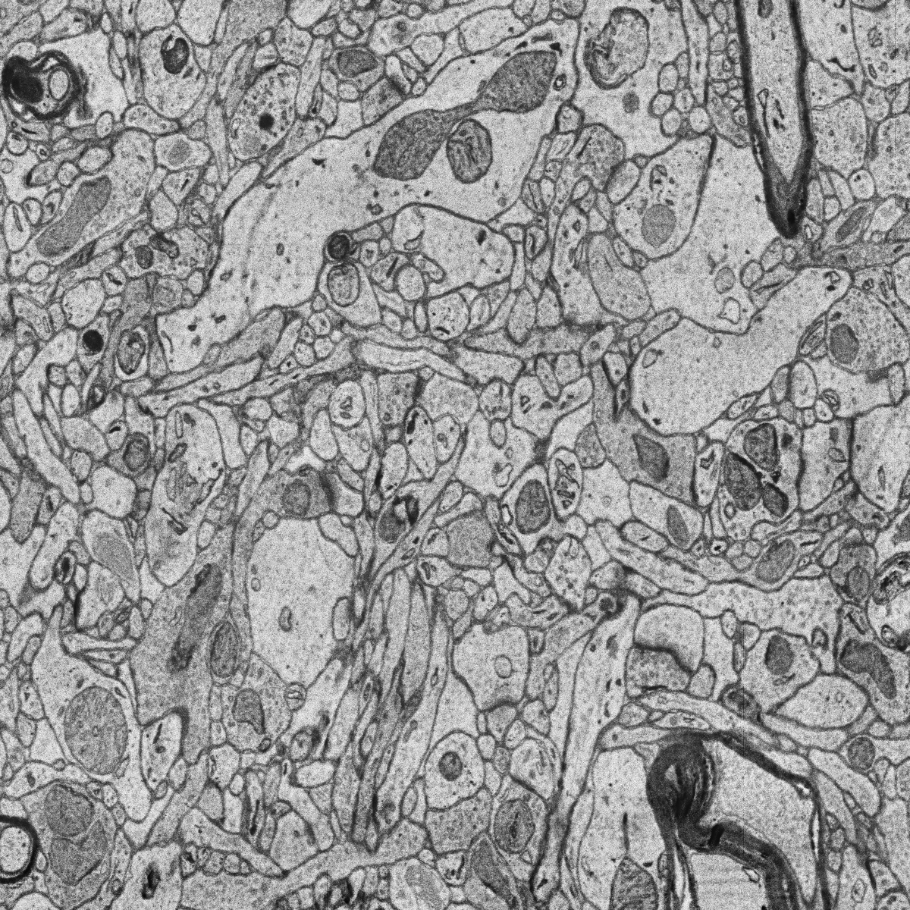
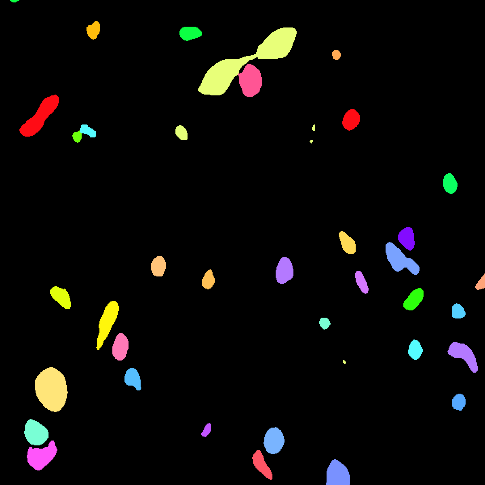

Detection¶
The goal of this workflow is assign an unique id, i.e. integer, to each object of the input image.
- Input:
Image.
.csvfile containing the coordinates of each object to detect.
- Output:
Image with the detected points as white dots.
.csvfile with the list of detected points in napari format.A
_prob.csvfile with the same list of points as above but now with their detection probability (also in napary format).
In the figure below an example of this workflow’s input is depicted. Each color in the mask corresponds to a unique object.

Input image.¶ |

Input instance mask (ground truth).¶ |
Data preparation¶
To ensure the proper operation of the library the data directory tree should be something like this:
dataset/
├── train
│ ├── x
│ │ ├── training-0001.tif
│ │ ├── training-0002.tif
│ │ ├── . . .
│ │ ├── training-9999.tif
│ └── y
│ ├── training_groundtruth-0001.tif
│ ├── training_groundtruth-0002.tif
│ ├── . . .
│ ├── training_groundtruth-9999.tif
└── test
├── x
│ ├── testing-0001.tif
│ ├── testing-0002.tif
│ ├── . . .
│ ├── testing-9999.tif
└── y
├── testing_groundtruth-0001.tif
├── testing_groundtruth-0002.tif
├── . . .
├── testing_groundtruth-9999.tif
Warning
Ensure that images and their corresponding masks are sorted in the same way. A common approach is to fill with zeros the image number added to the filenames (as in the example).
Problem resolution¶
Firstly, a pre-processing step is done where the new data representation is created from the input instance masks. The new data is a multi-channel mask with up to three channels (controlled by PROBLEM.INSTANCE_SEG.DATA_CHANNELS). This way, the model is trained with the input images and these new multi-channel masks. Available channels to choose are the following:
Binary mask (referred as
Bin the code), contains each instance region without the contour. This mask is binary, i.e. pixels in the instance region are1and the rest are0.Contour (
C), contains each instance contour. This mask is binary, i.e. pixels in the contour are1and the rest are0.Distances (
D), each pixel containing the euclidean distance of it to the instance contour. This mask is a float, not binary.Mask (
M), contains theBand theCchannels, i.e. the foreground mask. Is simply achieved by binarizing input instance masks. This mask is also binary.Updated version of distances (
Dv2), that extendsDchannel by calculating the background distances as well. This mask is a float, not binary. The piecewise function is as follows:

where A, B and C denote the binary mask, background and contour, respectively. dist refers to euclidean distance formula.¶
PROBLEM.INSTANCE_SEG.DATA_CHANNELS is in charge of selecting the channels to be created. It can be set to one of the following configurations BC, BCM, BCD, BCDv2, Dv2 and BDv2. For instance, BC will create a 2-channel mask: the first channel will be B and the second C. In the image below the creation of 3-channel mask based on BCD is depicted:

Process of the new multi-channel mask creation based on BCD configuration. From instance segmentation labels (left) to contour, binary mask and distances (right). Here a small patch is presented just for the sake of visualization but the process is done for each full resolution image.¶
This new data representation is stored in DATA.TRAIN.INSTANCE_CHANNELS_DIR and DATA.TRAIN.INSTANCE_CHANNELS_MASK_DIR for train data, DATA.VAL.INSTANCE_CHANNELS_DIR and DATA.VAL.INSTANCE_CHANNELS_MASK_DIR for validation, and DATA.TEST.INSTANCE_CHANNELS_DIR, DATA.TEST.INSTANCE_CHANNELS_MASK_DIR for test.
See also
You can modify PROBLEM.INSTANCE_SEG.DATA_CHANNEL_WEIGHTS to control which channels the model will learn the most. For instance, in BCD setting you can set it to (1,1,0.5) for distance channel (D) to have half the impact during the learning process.
After the train phase, the model output will have the same channels as the ones used to train. In the case of binary channels, i.e. B, C and M, each pixel of each channel will have the probability (in [0-1] range) of being of the class that represents that channel. Whereas for the D and Dv2 channel each pixel will have a float that represents the distance.
In a post-processing step the multi-channel data information will be used to create the final instance segmentation labels using a marker-controlled watershed. The process is as follows:
First, instance seeds are created based on
B,C,DandDv2(notice that depending on the configuration selected not all of them will be present). For that, each channel is binarized using different thresholds:PROBLEM.INSTANCE_SEG.DATA_MW_TH1forBchannel,PROBLEM.INSTANCE_SEG.DATA_MW_TH2forCandPROBLEM.INSTANCE_SEG.DATA_MW_TH4forDorDv2. These thresholds will decide wheter a point is labeled as a class or not. This way, the seeds are created following this formula:seeds = (B > DATA_MW_TH1) * (D > DATA_MW_TH4) * (C < DATA_MW_TH2)
Translated to words seeds will be: all pixels part of the binary mask (
Bchannel), which will be those higher thanPROBLEM.INSTANCE_SEG.DATA_MW_TH1; and also in the center of each instances, i.e. higher thanPROBLEM.INSTANCE_SEG.DATA_MW_TH4; but not labeled as contour, i.e. less thanPROBLEM.INSTANCE_SEG.DATA_MW_TH2.After that, each instance is labeled with a unique integer, e.g. using connected component. Then a foreground mask is created to delimit the area in which the seeds may grow. This foreground mask is defined based on
Bchannel usingPROBLEM.INSTANCE_SEG.DATA_MW_TH3andDorDv2usingPROBLEM.INSTANCE_SEG.DATA_MW_TH5. The formula is as follows:foreground mask = (B > DATA_MW_TH3) * (D > DATA_MW_TH5)
Afterwards, tiny instances are removed using
PROBLEM.INSTANCE_SEG.DATA_REMOVE_SMALL_OBJvalue. Finally, the seeds are grown using marker-controlled watershed.
Configuration file¶
Find in templates/instance_segmentation folder of BiaPy a few YAML configuration templates for this workflow.
Special workflow configuration¶
Here some special configuration options that can be selected in this workflow are described:
Metrics: during the inference phase the performance of the test data is measured using different metrics if test masks were provided (i.e. ground truth) and, consequently,
DATA.TEST.LOAD_GTis enabled. In the case of instance segmentation the Intersection over Union (IoU), mAP and matching metrics are calculated:IoU metric, also referred as the Jaccard index, is essentially a method to quantify the percent of overlap between the target mask and the prediction output. Depending on the configuration different values are calculated (as explained in Test phase).
mAP, which is the mean average precision score adapted for 3D images (but can be used in BiaPy for 2D also). It was introduced in [WLFB+20] and can be enabled with
TEST.MAP. This metric is used with a external code that need to be installed as follows:# Download the repo git clone https://github.com/danifranco/mAP_3Dvolume.Git # Change the branch git checkout grand-challenge
You need to also set the variable
PATHS.MAP_CODE_DIRto the path wheremAP_3Dvolumeproject resides.Matching metrics, that was adapted from Stardist ([WSH+20]) evaluation code. It is enabled with
TEST.MATCHING_STATS. It calculates precision, recall, accuracy, F1 and panoptic quality based on a defined threshold to decide wheter an instance is a true positive. That threshold measures the overlap between predicted instance and its ground truth. More than one threshold can be set and it is done withTEST.MATCHING_STATS_THS. For instance, ifTEST.MATCHING_STATS_THSis[0.5, 0.75]this means that these metrics will be calculated two times, one for0.5threshold and another for0.75. In the first case, all instances that have more than0.5, i.e.50%, of overlap with their respective ground truth are considered true positives.
Post-processing: after all instances have been grown with the marker-controlled watershed you can use
TEST.POST_PROCESSING.VORONOI_ON_MASKto apply Voronoi tesellation and grow them even more until they touch each other. This grown is restricted by a predefined area fromPROBLEM.INSTANCE_SEG.DATA_CHANNEL_WEIGHTS. For that reason, that last variable need to be set as one betweenBC,BCM,BCDandBCDv2. This way, the area will be the foreground mask, soMwill be usedBCMand the sum ofBandCchannels in the rest of the options.
Run¶
Command line: Open a terminal as described in Installation. For instance, using resunet_3d_instances_bcd_instances.yaml template file, the code can be run as follows:
# Configuration file
job_cfg_file=/home/user/resunet_3d_instances_bcd_instances.yaml
# Where the experiment output directory should be created
result_dir=/home/user/exp_results
# Just a name for the job
job_name=resunet_instances_3d
# Number that should be increased when one need to run the same job multiple times (reproducibility)
job_counter=1
# Number of the GPU to run the job in (according to 'nvidia-smi' command)
gpu_number=0
# Move where BiaPy installation resides
cd BiaPy
# Load the environment
conda activate BiaPy_env
python -u main.py \
--config $job_cfg_file \
--result_dir $result_dir \
--name $job_name \
--run_id $job_counter \
--gpu $gpu_number
Docker: Open a terminal as described in Installation. For instance, using resunet_3d_instances_bcd_instances.yaml template file, the code can be run as follows:
# Configuration file
job_cfg_file=/home/user/resunet_3d_instances_bcd_instances.yaml
# Where the experiment output directory should be created
result_dir=/home/user/exp_results
# Just a name for the job
job_name=resunet_instances_3d
# Number that should be increased when one need to run the same job multiple times (reproducibility)
job_counter=1
# Number of the GPU to run the job in (according to 'nvidia-smi' command)
gpu_number=0
docker run --rm \
--gpus $gpu_number \
--mount type=bind,source=$job_cfg_file,target=$job_cfg_file \
--mount type=bind,source=$result_dir,target=$result_dir \
--mount type=bind,source=$data_dir,target=$data_dir \
danifranco/em_image_segmentation \
-cfg $job_cfg_file \
-rdir $result_dir \
-name $job_name \
-rid $job_counter \
-gpu $gpu_number
Results¶
The results are placed in results folder under --result_dir directory with the --name given.
Following the example, you should see that the directory /home/user/exp_results/resunet_instances_3d has been created. If the same experiment is run 5 times, varying --run_id argument only, you should find the following directory tree:
resunet_instances_3d/
├── config_files/
│ └── resunet_3d_instances_bcd_instances.yaml
├── checkpoints
│ └── model_weights_resunet_instances_3d_1.h5
└── results
├── resunet_instances_3d_1
├── . . .
└── resunet_instances_3d_5
├── aug
│ └── .tif files
├── charts
│ ├── resunet_instances_3d_1_jaccard_index.png
│ ├── resunet_instances_3d_1_loss.png
│ └── model_plot_resunet_instances_3d_1.png
├── per_image
│ └── .tif files
├── per_image_instances
│ └── .tif files
├── per_image_instances_voronoi
│ └── .tif files
└── watershed
├── seed_map.tif
├── foreground.tif
└── watershed.tif
config_files: directory where the .yaml filed used in the experiment is stored.resunet_3d_instances_bcd_instances.yaml: YAML configuration file used (it will be overwrited every time the code is run).
checkpoints: directory where model’s weights are stored.model_weights_resunet_instances_3d_1.h5: model’s weights file.
results: directory where all the generated checks and results will be stored. There, one folder per each run are going to be placed.resunet_instances_3d_1: run 1 experiment folder.aug: image augmentation samples.charts:resunet_instances_3d_1_jaccard_index.png: IoU (jaccard_index) over epochs plot (when training is done).resunet_instances_3d_1_loss.png: Loss over epochs plot (when training is done).model_plot_resunet_instances_3d_1.png: plot of the model.
per_image:.tif files: predicted patches are combined again to recover the original test image. This folder contains these images.
per_image_instances:.tif files: Same asper_imagebut with the instances.
per_image_instances_voronoi(optional):.tif files: Same asper_image_instancesbut applied Voronoi. Created whenTEST.POST_PROCESSING.VORONOI_ON_MASKis enabled.
watershed(optional):Created when
PROBLEM.INSTANCE_SEG.DATA_CHECK_MWis enabled. Inside a folder for each test image will be created containing:seed_map.tif: initial seeds created before growing.foreground.tif: foreground mask area that delimits the grown of the seeds.watershed.tif: result of watershed.
Note
Here, for visualization purposes, only resunet_instances_3d_1 has been described but resunet_instances_3d_2, resunet_instances_3d_3, resunet_instances_3d_4 and resunet_instances_3d_5 will follow the same structure.